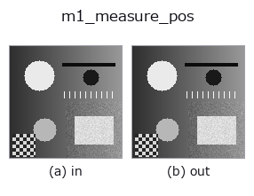

measure1d op• 数据种类:image → contour
• 调用:fullseye.apply(img, "m1_measure_pos", a=0.5, b=0.5)(2-D 的模型是一张图 + 两个标量旋钮 a,b∈[0,1])
• HALCON 对应:measure_pos(其含义与参数可参考 HALCON 手册)

*图为在 128×128 合成输入上实际运行的输出。左为输入，右为输出。点云以俯视散点显示(亮度 = z)，一维序列为折线，体数据为沿 z 的最大值投影，视频为中间帧，复数图像为幅值；无法成像的返回值直接显示数值。*
扫描旋钮 a(0.1 / 0.5 / 0.9，另一旋钮取默认):
▸ m1_measure_pos: knob a sweep (docs site)
扫描旋钮 b(0.1 / 0.5 / 0.9，另一旋钮取默认):
▸ m1_measure_pos: knob b sweep (docs site)
换别的图像(合成场景 / 照片 / 硬币。上排为输入，下排为对应输出。旋钮取默认):
▸ m1_measure_pos: other inputs (docs site)
*第 4 列是彩色 (H,W,3) 输入。此算子能正确处理颜色而不跨通道(不把颜色通道当作第三个空间轴卷积)。*
提取穿过中心的卡尺线上的子像素边缘位置(相当于 HALCON `measure_pos`:检测垂直于矩形/圆弧的直线边缘)。
> 以下的详细说明为原文 —— 摘要与标题已翻译。
線は画像中心を通り、`a で向きを theta = a*pi に振る。輝度プロファイルをガウシアンで軽く平滑化してから |d/ds gray| のピークをサブピクセル（3 点放物線補間）で検出し、b（0〜1）を最大振幅に対する相対しきい値として弱いエッジを捨てる。戻り値は CONTOUR（{"shape": (H,W), "cs": [1x2 の (row, col) 点, ...]}）、座標単位は入力画像のピクセル。主な使い道はエッジ数を count_contours`で数えること。
• gallery2d_contour_measure 族使用指南
• measurement_uncertainty — 計測の不確かさと校正の知識 — 「測れている」を主張するために
• 示例数据目录(下载 URL / 许可证) —— 2-D 用 skimage.data(BSD/公有领域)加合成图,3-D 给出真实数据源(Stanford/PDS 等)的下载 URL。
• 算子来历与参考文献 —— 该算子族所依据的研究/方法出处。
• 算法的正典(作者・年份)与用途见上面的族使用指南。
下面的程序已确认可以运行(与图相同的输入)。在 Studio 帮助中，此块会变成按钮，可当场加载并运行。
m1_measure_pos 0.50 0.50
▸ Load this pipeline · Load & run
• gallery2d_contour_measure — py -3.11 examples/gallery2d_contour_measure.py
• poc_dimensional_inspection — py -3.11 examples/poc_dimensional_inspection.py
contour 作为输入)identity · select_contours · smooth_contours · fit_line_contours · contours_to_region · count_contours · total_length · select_contours_xld
measure1d)m1_measure_projection · m1_measure_thresh · m1_measure_pairs · m1_fuzzy_measure_pos
*Provenance: ops.py — 2D 算子登记表。本条目由 tools/opdocs.py md 自动生成(请勿手工编辑)。*
© 2026 Kazufumi Furuse — Fullseye operator documentation. Licensed under Apache-2.0.
{kind=link}
{kind=link}
{kind=link}